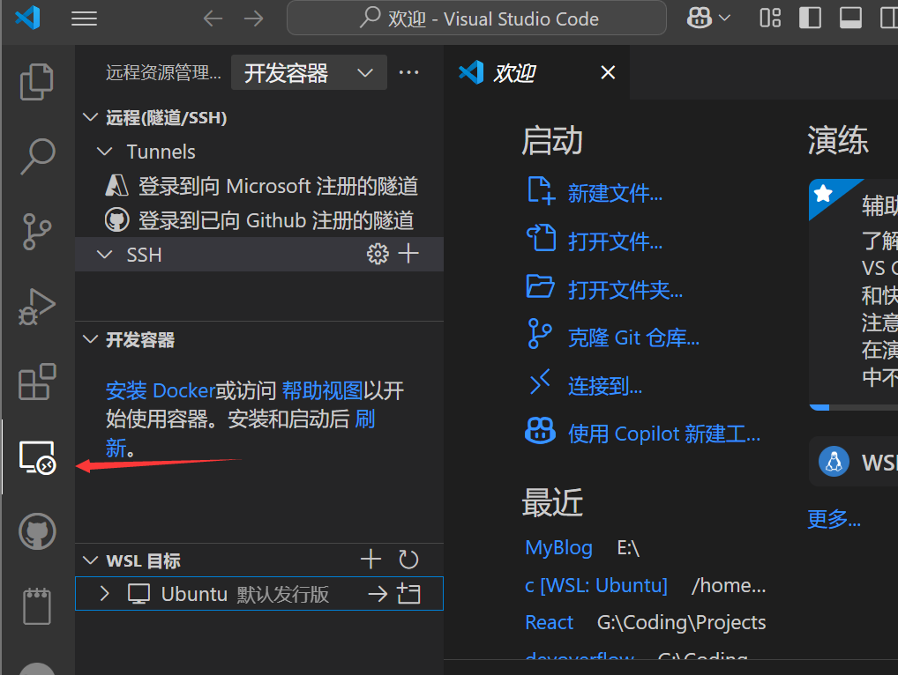
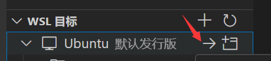
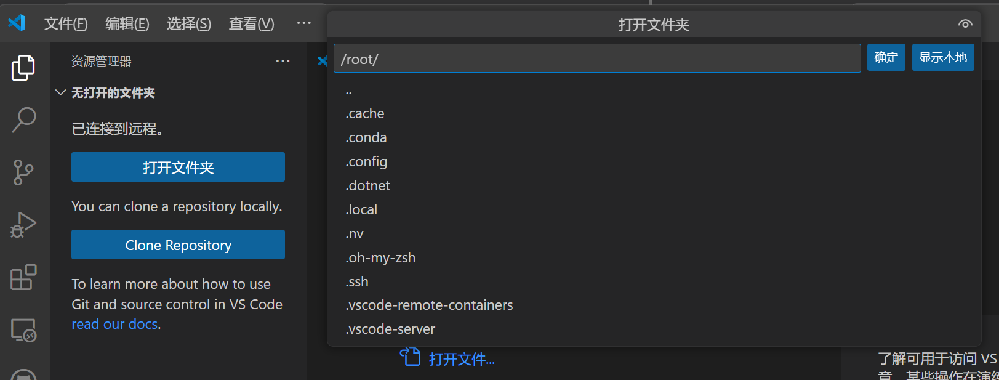
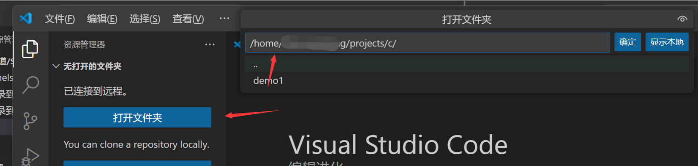
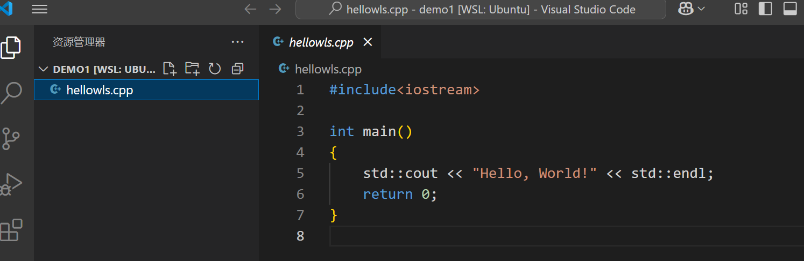
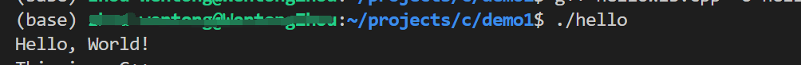

wsl与vscode
使用插件将wsl与vscode连接到一起，就可以在vscode上，借助wsl运行代码。
之前的文章讲解了怎么配置miniconda环境，链接上vscode之后直接运行就行。
本文将介绍怎么简单配置编译C与C++的环境音。
我也不知道意义是什么，只是觉得很好玩的样子……
我是win11下的wsl2，用的是ubuntu。
一、配置C和C++语言编译环境
1. 进入wsl
2.安装编译器
1 | sudo apt install build-essential |
build-essential：一个虚拟软件包，包含了编译 C/C++ 程序所需的基本工具gcc：C语言编译器g++：C++编译器make- 一些必要的头文件
二、 VS Code中进入wsl
安装插件
- WSL
- Remote Development
- vscode终端可以进入wsl
一些教程会推荐下载 Remote WSL,但是我在插件商城没有看到名称一模一样的了。这个Development的里面似乎包含了？无所谓反正下载了。
还有一个方法：直接从终端启动VScode
GPT 说的，没学会，以后再说。
从远程进入wsl
在vscode工具栏有一一个远程资源管理器：

如果顺利的话，这里的下面会有一个wsl目标，这里的Ubuntu下应该尚且是空的。鼠标悬空放置，点击箭头链接到wsl。

进入之后点击打开文件夹应该会自动让用户从/root/下选择wsl中想打开的文件。

但是我们通常在自己的用户下的项目中写代码和运行文件。
删掉root，从home中找到自己用户的文件夹工作。

三、编写代码
此时已经连接上你的wsl，并且是在wsl中的项目路径下。
但是用户应该还默认的是root，记得切换到自己的用户下。
1 | sudo [username] |
因为是用的vscode，在这里新建代码文件就和在win中差不多。只是文件都会在wsl中了。控制台也会自动进入wsl（ubuntu）。
试着写一个cpp代码吧！
- 新建cpp文件，写入代码

- 使用g++编译代码
1 | g++ hellowls.cpp -o hello |
g++:使用GNU C++编译器XX.cpp：C++源代码-o [XXXX]:输出为名称为XXXX的可执行文件，如果不指定名称，则会默认生成一个名为a.out的文件。
- 执行编译后的文件
1 | ./hello |

小插曲
最开始创建这个测试项目的时候用的事root用户，结果一直编译失败。
把当前目录的所有权改回当前用户
1 | sudo chown -R $(whoami):$(whoami) . |
-
chown：更改文件/目录的所有者 -
-R：递归处理目录下的所有文件 -
$(whoami)：当前用户名
确认目录权限
1 | ls -ld . |
若显示了当前用户的名称，即修改权限成功。